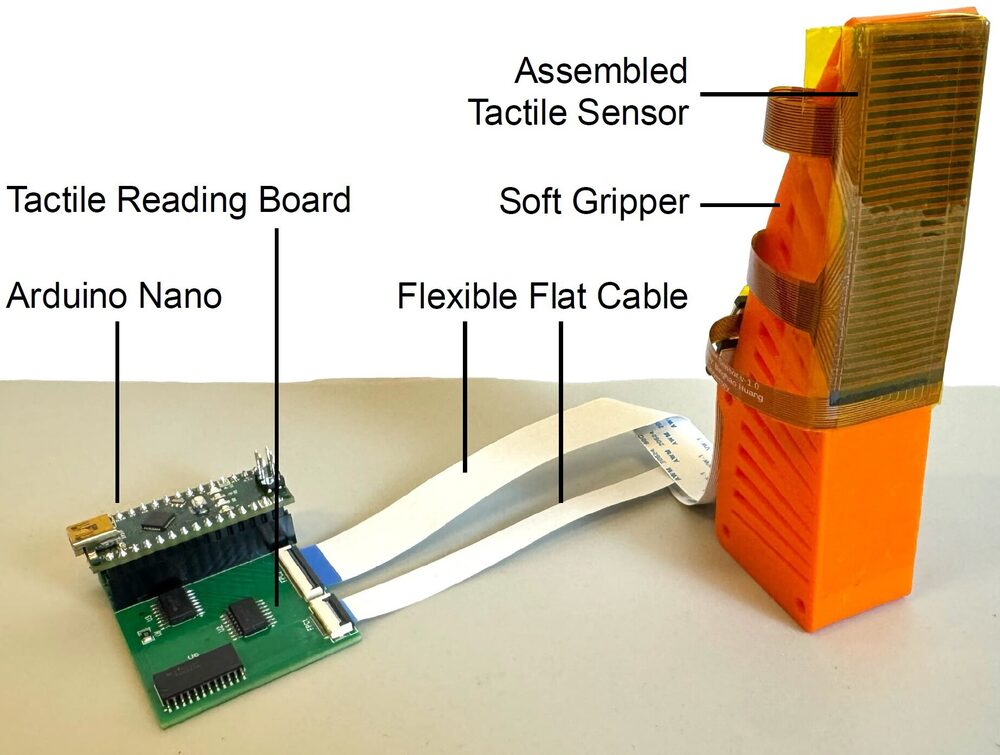
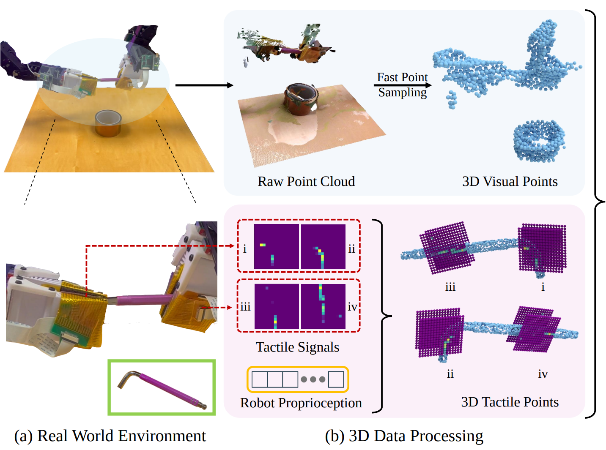

VT-Refine: Learning Bimanual Assembly with
Visuo-Tactile Feedback via Simulation Fine-Tuning
Binghao Huang1,
Jie Xu2,
Iretiayo Akinola2,
Wei Yang2,
Balakumar Sundaralingam2,
Rowland O'Flaherty2,
Dieter Fox2,
Xiaolong Wang2,3,
Arsalan Mousavian2,
Yu-Wei Chao2†,
Yunzhu Li1†
Conference on Robot Learning (CoRL), 2025
[Webpage]
[Paper]
New Building the tactile sensor? Try FlexiTac-V2, our upgraded design: ~3 min fabrication, $2.5 per sensor piece.
Our Visuo-Tactile Policy can deal with fragile objects and precise in-hand manipulation!
(The robot keeps retrying until it successfully grasps the grapes.)
Abstract
Tactile and visual perception are both crucial for humans to perform fine-grained interactions with their environment. Developing similar multi-modal sensing capabilities for robots can significantly enhance and expand their manipulation skills. This paper introduces 3D-ViTac, a multi-modal sensing and learning system designed for dexterous bimanual manipulation. Our system features tactile sensors equipped with dense sensing units, each covering an area of 3 mm^2. These sensors are low-cost and flexible, providing detailed and extensive coverage of physical contacts, effectively complementing visual information. To integrate tactile and visual data, we fuse them into a unified 3D representation space that preserves their 3D structures and spatial relationships. The multi-modal representation can then be coupled with diffusion policies for imitation learning. Through concrete hardware experiments, we demonstrate that even low-cost robots can perform precise manipulations and significantly outperform vision-only policies, particularly in safe interactions with fragile items and executing long-horizon tasks involving in-hand manipulation.

Summary Video
Tactile Sensor Hardware Design
New Hardware
FlexiTac-V2
Fabrication time: ~3 mins
The tactile sensor used in 3D-ViTac is now called FlexiTac-V1. For new builds we recommend FlexiTac-V2, our FPC-based redesign: about 10× faster to fabricate, half the cost per sensor piece, and a finer grid.
| FlexiTac-V1 (used in 3D-ViTac) |
FlexiTac-V2 | |
|---|---|---|
| Fabrication time | ~30 mins | ~3 mins |
| Sensing grid | 3 mm | 2 mm |
| Resolution | 16×16 | 32×12 |
| Cost per sensor piece | $5 | $2.5 |
FlexiTac-V2 Hardware

Hardware Tutorial Preview
Teleoperation Demo 1
Force Feedback with FlexiTac
Teleoperation Demo 2
Cable Routing with FlexiTac
Original 3D-ViTac Sensor (FlexiTac-V1)
The sensor used in this paper's experiments. Fabrication time: ~30 mins.
Tactile Hardware Introduction
Load Test and Flexibility
Visuo-Tactile Points Representation
The blue points are observed by camera while the purple points are tactile points. The points are projected into the same 3D space for policy learning.3D Data Processing

Visuo-Tactile Points
Capability Experiments
Tasks Requiring Fine-Grained Force Information
(1) Egg Steaming. The robot uses its right hand to open the egg tray first. Then the robot must grasp
and place an egg into an egg cooker. Subsequently, the left hand is used to relocate and secure the
cooker’s cover over the egg.
(2) Fruit Preparation. The robot uses its left hand to grasp the plate and place it on the table.
Subsequently, both robot arms collaborate to open the plastic bag. Then, the right arm grasps a grape or
several grapes and places them on the plate.
Tasks Requiring In-Hand State Information
(3) Hex Key Collection. The right hand is required to grasp the Hex Key, and then the left hand needs
to grasp the Hex key followed by an in-hand adjustment of the Hex Key’s position using its left
hand. Subsequently, the robot is required to accurately insert the Allen wrench into the hole in the
box.
(4) Sandwich Serving. First, the right hand is required to grasp the serving spoon. Second, the left hand
needs to hold the pot handle and then tilt the pot. The right hand should then retrieve the fried egg
from the pot and serve it on the bread.
Policy Robustness: Comparison with Baselines
Comparison with w/ Tactile and w/o Tactile
Ours: Success In-hand Adjustment
Baselines: Fail In-Hand Adjustment
Ours: Safely Grasp Fruit
Baselines: Broken when Grasp Multiple Ones
More Policy Rollout: Fine-grained Single Arm Tasks
Retrieve Light Bulb
Fruit Collection
Insertion
Insertion
Human Interference Test
Special Task
We collect the data that we keep trying to grasp the only single grape in the bag, and we can see the
policy could regrasp until there is only one single grape in hand.
Media Coverage
BibTeX
@inproceedings{huang3d,
title={3D-ViTac: Learning Fine-Grained Manipulation with Visuo-Tactile Sensing},
author={Huang, Binghao and Wang, Yixuan and Yang, Xinyi and Luo, Yiyue and Li, Yunzhu},
booktitle={8th Annual Conference on Robot Learning}
}
Related Works
Touch in the Wild:
Learning Fine-Grained Manipulation with a Portable Visuo-Tactile Gripper
Xinyue Zhu*,1,
Binghao Huang*,1,
Yunzhu Li1
Conference on Neural Information Processing Systems (NeurIPS), 2025
Best Demo Award at RSS 2025 Workshop on Robot Hardware-Aware Intelligence [Link]
[Webpage]
[Paper]